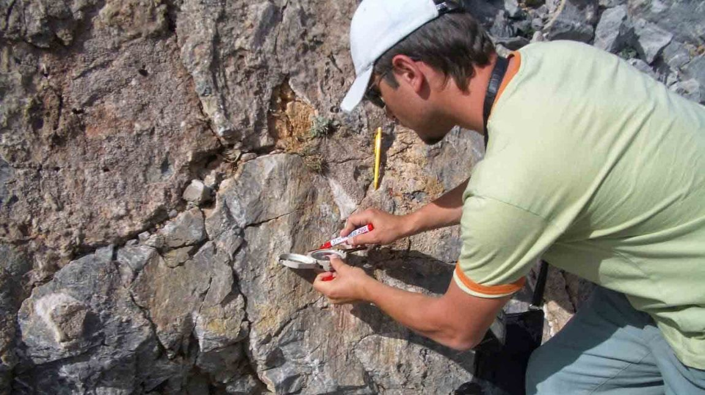

Геоморфолог

Геоморфолог — это специалист в области наук о Земле, который изучает рельеф поверхности планеты: его формы, происхождение, историю развития, современные динамические процессы и изменения. Его работа находится на стыке географии и геологии, так как рельеф — основа ландшафта, а его формирование и развитие зависят от взаимодействия внутренних (тектонических) и внешних (эрозия, выветривание, деятельность ледников, рек, ветра) сил.